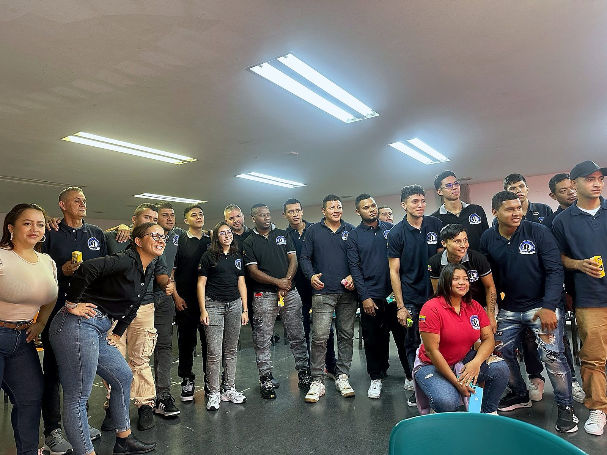
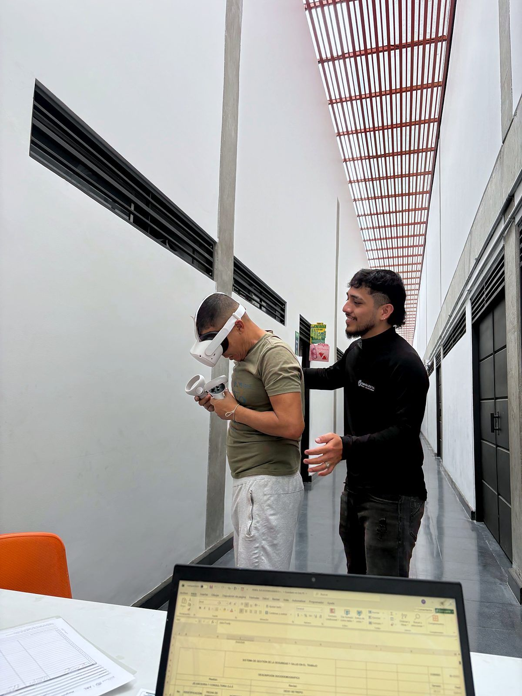
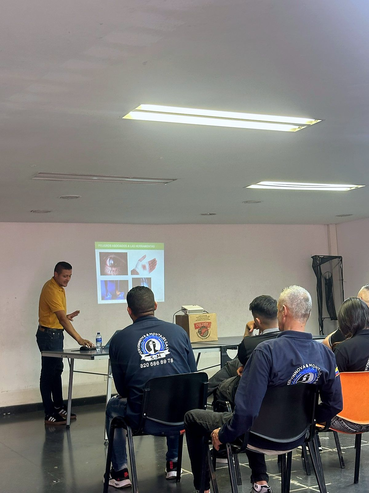
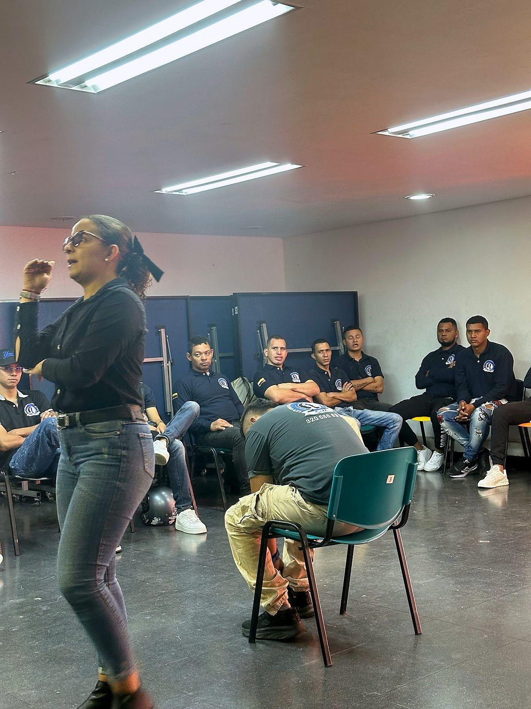

Construcción
Trabajo en alturas, excavaciones y manejo de cargas.
- Curso de trabajo en alturas
- Evaluaciones médicas según el cargo
- Plan de respuesta a emergencias en obra

Experiencia
Cada sector tiene riesgos distintos. Ajustamos el sistema, la capacitación y las evaluaciones a los riesgos de tu operación.
Trabajo en alturas, excavaciones y manejo de cargas.
Maquinaria, energías peligrosas y espacios confinados.
Ergonomía, riesgo psicosocial y pausas activas.
Bloqueo, etiquetado y distancias de seguridad.
Galería
Capacitaciones, jornadas de evaluación médica y acompañamiento en las instalaciones de nuestros clientes.







Escríbenos y te contamos cómo empezar, sin compromiso.